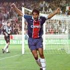

|  | Rai |
| Gender | Male |
| Ethnic | Brazilian |
| Job | Brazilian Footballer |
| Desc | xxxx |
Affiliation
| Org | Brazil National Team |
| Club as Coach | Sao Paulo |
2016 09 17 Retrieve
[1994 FIFA World Cup winner Rai on Brazil manager Tite] I am optimistic about the national team right now. Tite is an experienced guy who has had a fine career and he and the coaching staff have done well to instantly cool the atmosphere in the squad. There has not been a good atmosphere around the Selecao recently and the team have faced a lot of uncertainty in the two years since the World Cup. Tite was the unanimous choice as coach, he is experienced and has a good working relationship with the press, which also helps. He has created a more relaxed atmosphere and that showed in the players’ performances
2020 05 04 Retrieve
[Real Madrid are interested in Igor Gomes but Sao Paulo have received no official approach for the midfielder] It’s true. What we can say is that [Igor Gomes] is a player that is attracting the interest of European clubs. But there has been no official contact. It is a reality that he is igniting interest. I have already spoken to European friends who have made comments, but that’s it.
[Sao Paulo director Diego Lugano, a former Uruguay team-mate of Cavani, said he would try to encourage the veteran striker to join the Brazilian side if he opts to return to South America] Lugano is close to him because they are the same nationality, they are friends. The position is as follows: if there is any possibility, which is very difficult, for Cavani to come to South America, the possibility for Cavani to talk to Lugano, as he will have done many times, is huge. But at the moment Sao Paulo are not thinking about it and cannot afford it.
2020 07 17 Retrieve
[Rai interview: Former Brazil captain on Sao Paulo and ‘sticking to sports’] I grew up in one of the most socially unjust countries in the world and I was brought up in a family that raised me to never consider that a normal thing. That is what inspires me the most. I don’t worry about speaking out because my beliefs and ideas go in the same direction as the beliefs and ideas of a very important part of society. We should never be afraid to take a stand. After all, we are in a democratic system and we should fight to keep it that way as well
Sport is one of the most important and influential industries there is. It has an enormous impact in society, economics and politics. Football, in particular, is the most popular sport in the world, and as a result, it reflects a lot of what society is. Freedom of expression and debating ideas is the path to make us grow as a society, and sports can have and should have a very big role in that. That happens when we provide players with an education that sparks greater questions about matters that go beyond our activities or personal interests
Sao Paulo were the best team in the world back in the ’90s
There was a quote. He said: ‘If you’re going to be run over, it better be by a Ferrari’. We had a young team but a mature team so it was a good mix. The core was at its peak, we had a lot of technical quality and we had smart players who complemented each other. We also had a great coach, a great leader, in Tele Santana, who knew how to maximise the team’s potential like no other. He is definitely among the best three coaches of all time
[Despite Neymar’s best efforts, he is still the fans’ favourite Brazilian] It is an honour. It means a lot to me
My current role as a director is very intense, but in a different way to being a coach. A coach has to live that intensity every single day. My routine as a director can be even more intense and frenetic at times, but not necessarily every day. I believe the team has reached its best level at the start of this year. Unfortunately, we had to stop because of the pandemic but we have a great and a great coach, so I am very confident for the future and I believe the fans feel that way too
[Gol de Letra, the foundation that he established alongside fellow former Brazil international Leonardo in 1998, is committed to providing opportunities and education for children] Gol de Letra’s achievements are down to the hard work of a lot of people that makes the institution what it is and my hope is that it goes far beyond my own existence. The biggest goal is to give everyone similar opportunities for education and development, regardless of their social status. I hope that it continues to inspire people. It is very frustrating to see a world that gets richer and richer, but more and more unequal and unjust every day. I believe that I am contributing as much as I can to a very small change. But what really needs to change is that we need great global leaders. We need competent, charismatic leaders who can change the course of history. We need people who think about the world as a place that needs balance, harmony and sustainability. Leaders who know that, to make it happen, we need less inequality, more respect and love of our neighbours. Someone who cares about the next generation. What we see right now is very worrying, but my hope is that we are just taking a few steps back right now so that we can find a new way out, a new path